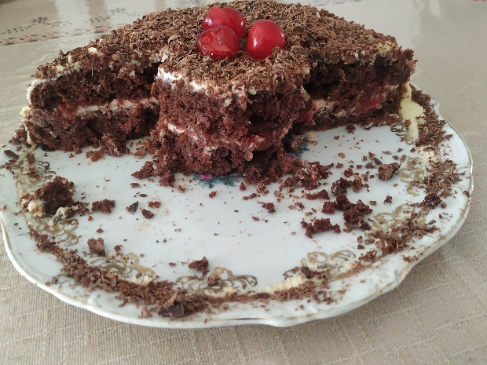
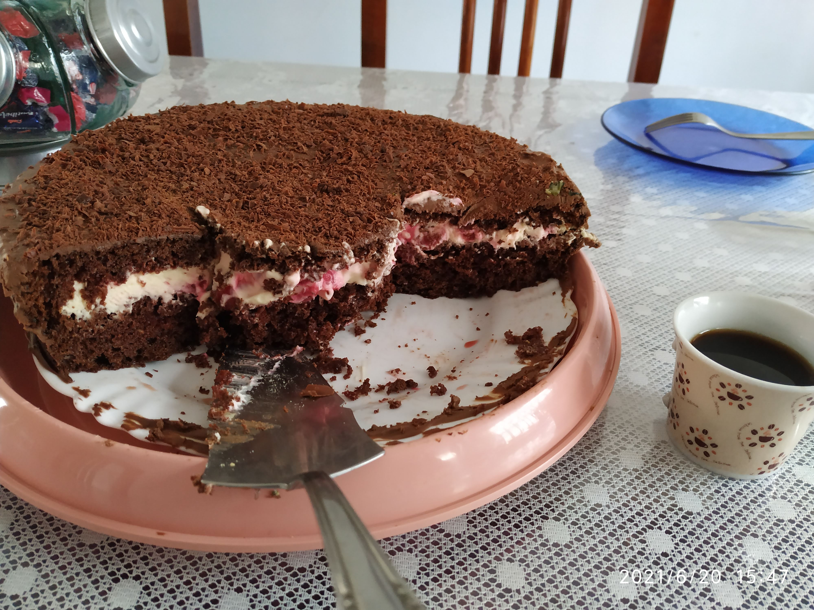

Bolo Floresta Negra
Ingredientes
- Massa:
- 6 ovos
- 150 ml de água
- 2 xíc. de farinha de trigo
- 1 xíc. de açúcar
- 8 colheres de chocolate em pó
- 1 colher de fermento químico
- Recheio:
- 500 ml de creme de leite fresco
- 3 colheres de açúcar
- quanto baste de essência de baunilha
- quanto baste de chocolate meio amargo ralado
- quanto baste de cereja em conserva
- Calda:
- 1 xíc. de açúcar
- 2 xíc. de água
- quanto baste de marasquino
Modo de Preparo
Bater as claras em neve e reservar. Bater as gemas com a água até dobrar de volume, acrescentar o açúcar e bater por mais três minutos. Juntar a farinha, o chocolate e o fermento e misturar bem. Por último acrescentar as claras em neve. Colocar numa forma untada e levar ao forno por aproximadamente trinta minutos.
Para o recheio bater na batedeira o creme de leite com o açúcar e a baunilha até o ponto de chantilly. Para a calda ferver os ingredientes até ficar uma calda amarelada, retirar do fogo, deixar esfriar e acrescentar a calda da cereja.
Dividir a massa ao meio e regar o bolo com a calda. Espalhar o chantilly e as cerejas por cima, cobrir com chantily ou creme ganache e jogar o chocolate ralado por cima.


